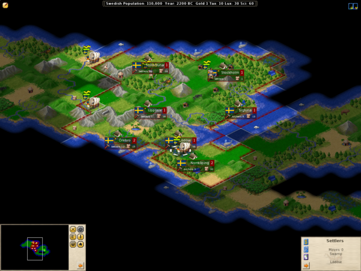

#16962 1 2007-08-26T12:39:49Z bion1 It's a game for free.
It's like Civilization, except better.
Website:
http://www.freeciv.org

#359662 2 2007-08-26T17:14:34Z Patsy7z7 I remember playing this on Linux when i installed it onto an old machine.
I didn't like the setup so much. Like most Free/Linux games at that time, it was heavily based on a command prompt, and the visual portion was...lacking.
Looking at this screenshot, however, it seems to have gotten a graphical update.
Either way, i'd rather play the retail Civilization. And, since i have it, i will.
#359730 3 2007-08-26T21:30:04Z Luminaflare in my opinion free copys can't surpass a retail version of a game as they don't have the budget. not to say it's not good though it might be i dunno, just expressing my opinion.
#361106 4 2007-08-31T12:03:09Z faemir I like freeciv, it's better than all but civ IV imo.